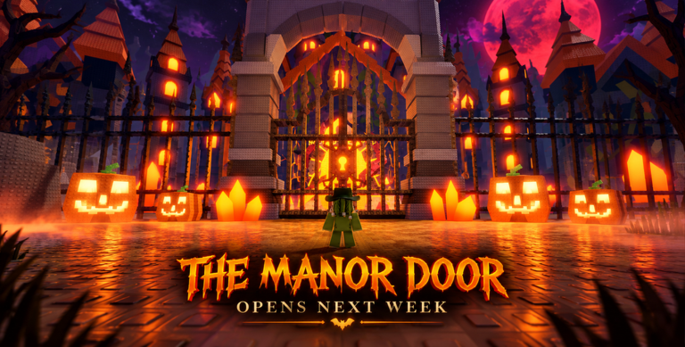

🎃 Halloween Dimension e LIVE în Steal An Egg: 3 biomuri, Echo, Phantom Express + Part 2 pe 24 oct

🥚 Steal An Egg a trecut de 9 MILIARDE de vizite!
9.047.158.188 vizite și ~1,01M jucători online (citire din API-ul Roblox, 22 oct ~20:45 RO). Citirea noastră din API-ul public Roblox, 22 oct 20:46 RO: 9.047.203.447 vizite și 1.009.888 jucători online.
⏰ Reminder: Dimensiunea de Halloween se închide sâmbătă, 24 oct, ~17:00 RO; PART 2 pornește sâmbătă, 24 oct, ~18:00 RO.
⏳ UPDATE 23 oct: Mai e O ZI – se închide mâine, sâmbătă, ~17:00 RO
Halloween Dimension se închide mâine, sâmbătă, 24 oct, pe la 17:00 (ora României), deci azi e ultima zi întreagă în dimensiune.
⏳ UPDATE 23 oct, după-amiază: Halloween Dimension se închide MÂINE, sâmbătă, 24 oct, pe la 17:00 (ora României), deci azi și mâine dimineață sunt ultimele ocazii de farm. PART 2 e programată sâmbătă, 24 oct, la 18:00 RO și se termină duminică, 25 oct, la 18:34 (ora României, după schimbarea orei). Conținutul PART 2 nu e confirmat încă.
⏳ UPDATE 22 oct: Ultimele 48 de ore! Halloween Dimension se închide sâmbătă, 24 oct, pe la 17:00 (ora României), deci mai ai cam două zile ca să termini ce ai de făcut în dimensiune.
⚡ UPDATE (19 oct, Terra): planul pentru PART 2 rămâne valabil: PART 2 pornește sâmbătă, 24 oct, ~18:00 și ține până duminică, 25 oct, ~18:34 (ora României). Conținutul e încă necunoscut; pe live aflăm!
⚠️ UPDATE (18 oct): s-a corectat doar ora de final a PART 2 (Halloween Dimension se termină tot sâmbătă, 24 oct, la 17:00 RO) — info de la producătorul live VEXU (Terra):
- PART 2 ține de sâmbătă, 24 octombrie, ~18:00 până duminică, 25 octombrie, ~18:34 (ora României) — NU 19:34, pentru că pe 25 oct se trece la ora de iarnă.
- Conținutul Part 2 e încă necunoscut; îl aflăm pe live.
Halloween Dimension e LIVE pe Steal An Egg. A pornit la timp sâmbătă, 17 octombrie, la 18:00 (ora României) și rulează până sâmbătă, 24 octombrie, la 17:00 RO. În seara lansării, jocul a trecut de 10,7M jucători simultan (Roblox API) — probabil un record nou (nu e anunțat oficial).
Update 9 — patch notes oficiale (CONFIRMAT):
- Intri prin portalul de la spawn în 3 biomuri noi: Graveyard, Haunted Swamp, Abandoned Manor.
- Fiecare biom are 6 pets noi (18 în total).
- Echo the Ghost Dog: îl ajuți să-și recupereze amintirile (4 obiecte pierdute).
- Phantom Express vine la fiecare oră fixă și la jumătate; ca să urci îți trebuie Phantom Express Ticket; trenul te duce într-o zonă nouă care deblochează Spectral Mutation.
- Candy Corn: strângi returnând ouă și învingând monștri. Evenimente Blood Moon (x2 Candy Corn) și Pumpkin Collection.
- În store a apărut un Halloween Egg nou.
Halloween PART 2 (CONFIRMAT):
- Part 2 începe sâmbătă, 24 octombrie, la 18:00 RO, imediat după ce se termină Dimension (24 oct, 17:00), și se termină duminică, 25 octombrie, la 18:34 RO (ora de iarnă, după schimbarea orei din 25 oct).
Vezi și: 3 formule de shorts pentru ultimele zile de Halloween în Steal An Egg: https://pyromanc3r777.github.io/vexu-hq/posts/3-formule-pentru-ultimele-zile-de-halloween-in-steal-an-egg.html
Follow pe TikTok @vexu_online și abonare pe YouTube la VEXU Online. Follow = Au ce bile! 💥